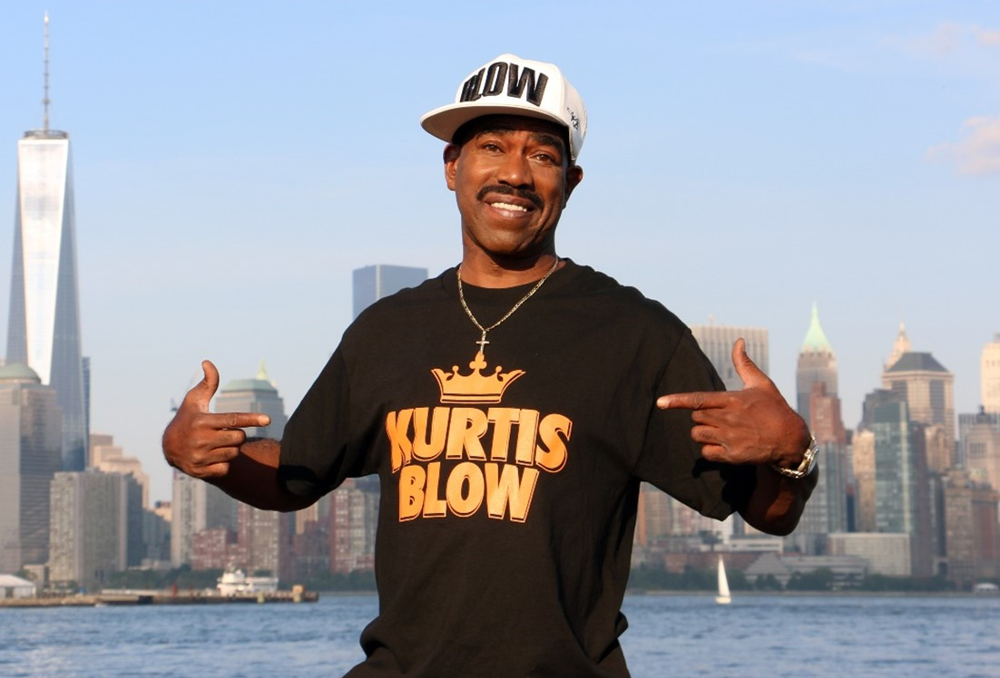
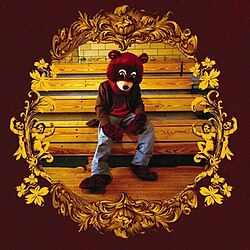

Genere musicale: Pop Rap
Le radici del genere pop rap risalgono dalla popolarita' gia' ottenuta dell'hip hop negli anni '70 e '80.
Kurtis Blow, il primo a firmare con una major e portare il rap alla televisione, e i Beastie Boys cominciarono a fondere il hip hop con strutture del rock/pop. Nel 1986, ci fu la prima scintilla con la cover di "Walk This Way" di Run-D.M.C con gli Aerosmith. Questa cover dimostro' che fondere il rap con il rock-pop potrebbe scalare le classifiche e aprire un nuovo pubblico intero.

In questo periodo, il pop rap trova la sua identita' e esplode definitivamente in popolarita', in parallelo con la "Golden Age" dell'hip hop.
Artisti come MC Hammer e Vanilla Ice nelle arene di massa. Tupac, The Notorious B.I.G dimostrano che il rap può essere credibile.
Ci furono anche artisti come Young MC che su canzoni con storie piu' leggere e positive.

In questo periodo il genere è ormai diventata un motore principale dell'industria discografica mondiale, a causa delle collaborazioni continue con star dei pop e R&B.
Nel 2003, 50 Cent dominava la radio con "In da Club" portando l'estetica gangsta nel pop globale.
Nell'anno dopo, Kanye West rilascia "The College Dropout" prende l'attenzione popolare da temi di strada introdotte da 50 Cent prima a quelli più personali.

Eminem, rilasciando i suoi album "The Marshall Mathers" e "The Eminem Show", diventa l'artista più venduto del decennio. La sua formula mescola una tecnica lirica complessa con ritornelli melodici.
In questo decennio il genere ha ormai superato il rock e il pop tradizionale diventando il più ascoltato nel mondo.
Qui la distinzione tra "rapper" e "cantante pop" diventa ancora più sfumato.
Drake, un'artista canadese si inventa un genere "ibrido", alternando nella stessa canzone strofe rap e ritornelli R&B. Questo diventò lo standard per una generazione intera di artisti, tra cui Juice WRLD e Travis Scott